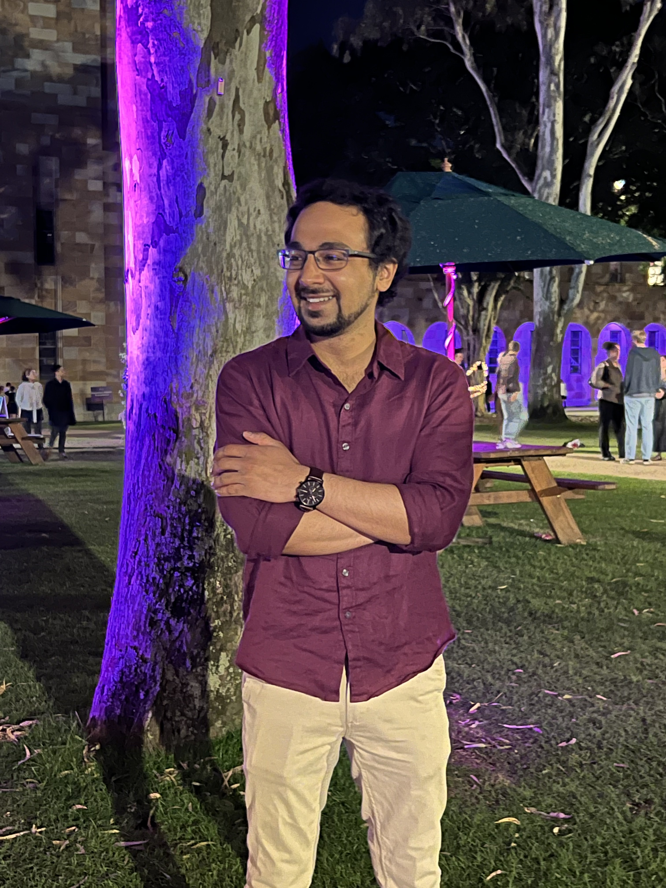

Hey! I am Shubhankar Gupta. I graduated with a Master's degree in Computer Science from the University of California, Davis on 11 September 2020. I am a coder by heart and soul!

Here are a few fun facts about me!
- I’ve lived in Mumbai, New Delhi, Davis, Toronto, and Seattle. Each city has had its own personality, although I seem to be gradually moving toward quieter places.
- I love watching crime and thriller series, especially The Mentalist, Mindhunter, and Money Heist.
- I have a serious travel bug and collect fridge magnets and quirky souvenirs from the places I visit. My travels have taken me across Canada, Australia, and Singapore.
- I'm a lifelong vegetarian.
- I enjoy tennis and cricket. Yes, the sport, not the insect.
- I’m ambidextrous when it comes to sports: I play tennis with my right hand and badminton with my left.
My Academic Life
I graduated with a Master's degree in Computer Science from the University of California, Davis on 11 September 2020. I aspire to design and develop applications to solve real life issues.As part of the Master's program, I undertook a research project where I was part of the Collaborative and Social Computing Lab (CSC) Lab created and led by Prof. Hao-Chuan Wang. I developed a web application that introduces a novel approach to improve the health and well-being of workers who have been forced to work remotely due to the COVID-19 pandemic.
I have worked as a Graduate Teaching Assistant at UC Davis. I have led discussions and graded 70 students for the course, ECS 36A: Programming and Problem Solving in C (Sept - Dec 2019). I have also led discussions and graded 60 students for the course, ECS 36B: Software Development & Object-Oriented Programming in C++ (Jan - Mar 2020).
I graduated with a Bachelors of Technology degree in Computer Science and Engineering from Jaypee Institute of Information Technology, India in June, 2018.
My Professional Life
I’m a Senior Software Engineer at Oracle, where I design and operate distributed systems for Oracle Cloud Infrastructure (OCI). My current work focuses on a near-real-time infrastructure health platform that processes millions of signals across 40+ cloud regions and helps detect large-scale service disruptions affecting OCI enterprise customers’ workloads within a five-minute detection target. I have led reliability and scalability improvements that increased burst-processing throughput by 14× and partnered with infrastructure teams to automate outage detection and incident response. Earlier at OCI, I helped develop a large-scale video streaming service supporting scalable content distribution and just-in-time packaging of adaptive-bitrate video. My experience spans Python, PySpark, Java, Kubernetes, Terraform, and Helm, with a focus on distributed systems, reliability, and operational excellence.
I have also worked as a Software Engineering Intern at Equinix, Inc. in Sunnyvale, California from 17 June - 6 September, 2019 where I developed an analytical dashboard for the Digital Experience team that helps to monitor and analyze real-time order payload data from the Equinix Customer Portal. I got the opportunity to work with large code bases and leverage knowledge in React.js , D3.js , Node.js and Express.js.